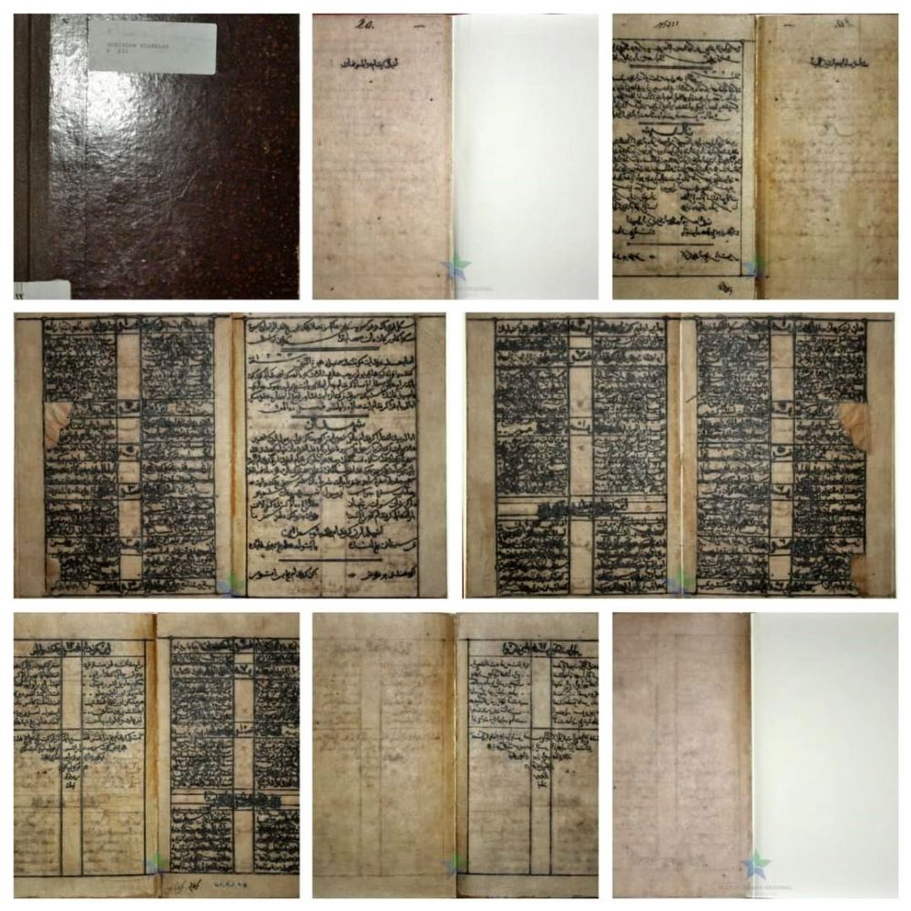
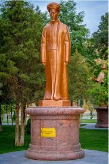

Gurindam Dua Belas adalah karya sastra puisi klasik yang diciptakan oleh Raja Ali Haji pada tahun 1846. Karya ini terdiri dari dua belas pasal yang berisi nasihat-nasihat tentang kehidupan yang berlandaskan nilai Islam.
Setiap bait terdiri dari dua baris yang saling berkaitan antara syarat (sebab) dan akibat. Gurindam ini menjadi salah satu karya sastra Melayu yang paling berpengaruh sepanjang masa.
"Karya ini merupakan pedoman hidup yang dikemas dalam bentuk puisi yang indah dan penuh hikmah, mencerminkan kearifan lokal Melayu yang tinggi."
Gurindam mengajarkan hikmah kehidupan melalui untaian kata yang indah dan bermakna mendalam.
Setiap bait gurindam terdiri dari dua baris yang mengandung nasihat kehidupan yang bijaksana.
Warisan budaya Melayu yang tak ternilai harganya dan telah diakui sebagai karya sastra dunia.
"Barang siapa mengenal diri,
maka telah mengenal akan Tuhan yang bahri."
Raja Ali Haji bin Raja Haji Ahmad
Pujangga Agung Melayu
Raja Ali Haji adalah seorang bangsawan, sastrawan, sejarawan, dan ulama Melayu yang lahir di Pulau Penyengat. Beliau dikenal sebagai Bapak Bahasa Indonesia karena kontribusinya yang besar dalam perkembangan bahasa dan sastra Melayu. Karya terbesarnya, Gurindam Dua Belas, ditulis pada tahun 1846 dan hingga kini tetap menjadi salah satu karya sastra Melayu yang paling berpengaruh di dunia.
"Barang siapa mengenal diri,— Raja Ali Haji, Gurindam Dua Belas
maka telah mengenal akan Tuhan yang bahri."
Landasan utama gurindam adalah keimanan kepada Tuhan Yang Maha Esa sebagai sumber segala kebijaksanaan dan kebenaran hidup.
Setiap pasal mengandung nasihat kebijaksanaan yang universal tentang cara menjalani kehidupan yang bermakna dan bernilai.
Gurindam menekankan pentingnya akhlak dan budi pekerti luhur sebagai cerminan dari keimanan dan kebijaksanaan seseorang.

